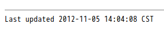

19:35:19 CST document last modified time 2013-06-12 document last modified date 2013-10-13 the current date 20:48:03 CST the current time
lang-en.conf[footer-text]
Version {revnumber}{basebackend-xhtml11?<br />}{basebackend-xhtml11=<br>}
Last updated {docdate} {doctime}xhtml11.conf[footer]
</div>
{disable-javascript%<div id="footnotes"><hr /></div>}
<div id="footer">
<div id="footer-text">
template::[footer-text]
</div>為什麼設定 docdate 跟 doctime 都沒有作用？
1479 if self.infile is not None:
1480 if self.infile and os.path.exists(self.infile):
1481 t = os.path.getmtime(self.infile)  1482 elif self.infile == '<stdin>':
1483 t = time.time()
1484 else:
1485 t = None
1486 if t:
1487 self.attributes['doctime'] = time_str(t)
1482 elif self.infile == '<stdin>':
1483 t = time.time()
1484 else:
1485 t = None
1486 if t:
1487 self.attributes['doctime'] = time_str(t)  1488 self.attributes['docdate'] = date_str(t)
1489 if self.infile != '<stdin>':
1490 self.attributes['infile'] = self.infile
1491 self.attributes['indir'] = os.path.dirname(self.infile)
1492 self.attributes['docfile'] = self.infile
1493 self.attributes['docdir'] = os.path.dirname(self.infile)
1494 self.attributes['docname'] = os.path.splitext(
1495 os.path.basename(self.infile))[0]
1488 self.attributes['docdate'] = date_str(t)
1489 if self.infile != '<stdin>':
1490 self.attributes['infile'] = self.infile
1491 self.attributes['indir'] = os.path.dirname(self.infile)
1492 self.attributes['docfile'] = self.infile
1493 self.attributes['docdir'] = os.path.dirname(self.infile)
1494 self.attributes['docname'] = os.path.splitext(
1495 os.path.basename(self.infile))[0]| 預設會抓檔案的最後修改時間。 | |
這是 asciidoc.py 唯一對 docdate 跟 doctime 寫入的地方，難怪從 command line 怎麼指定都沒用。
|
參考資料
-
#656736 - [asciidoc option to keep the date in the converted document - Debian Bug report logs] (2012-01-21)
-
git - git check out file time (2010-08-07) - 提到 clone 下來的 mtime 是 checkout time，可以用 metastore、etckeeper、git-cache-meta 等可以幫忙。
-
Restore file’s modification time in git - Stack Overflow (2010-03-16)
-
xhtml11 configuration file and footer - asciidoc | Google 網上論壇 (2010-01-19) - 作者回說把
[footer-text]提出到lang-xx.conf底下。 -
What’s the equivalent of use-commit-times for git? - Stack Overflow (2009-12-26) - 把 mtime 變成 commit time。
-
Revision History - Google Groups (2009-05-01) -
-
Request for a "Last updated" caption | Google Groups (2009-02-24)
-
Last updated: mtime or localtime? - asciidoc | Google 網上論壇 (2009-02-03) - 作者回說可以用
localdate跟localtime來指定 "last updated" 的時間。